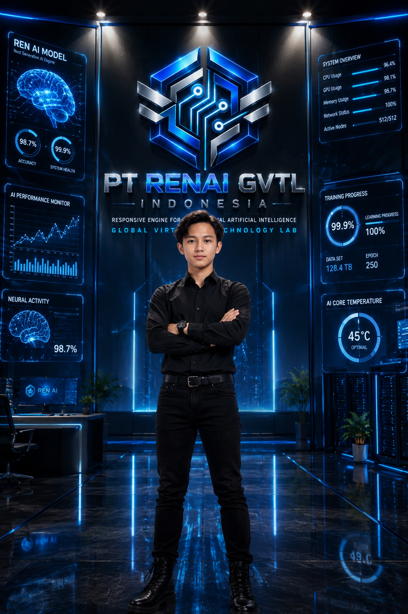

01
Fondasi
Struktur organisasi, identitas, dokumentasi, tata kelola, dan arah pengembangan dibangun sebagai dasar pertumbuhan perusahaan.

PT RENAI GVTL Indonesia merupakan perusahaan teknologi asal Majalengka, Jawa Barat, Indonesia, yang berfokus pada Artificial Intelligence, riset, pengembangan perangkat lunak, dan pembangunan ekosistem teknologi RENAI GVTL.
Perusahaan berada pada Foundation Stage. Fokus saat ini mencakup pembangunan fondasi organisasi, tata kelola, pembelajaran, riset, eksperimen, dan pengembangan teknologi secara bertahap.
PT RENAI GVTL Indonesia berfokus pada pembangunan fondasi perusahaan, tata kelola, riset, pembelajaran, inovasi, eksperimen, dan pengembangan teknologi Artificial Intelligence secara bertahap.
Struktur organisasi, identitas, dokumentasi, tata kelola, dan arah pengembangan dibangun sebagai dasar pertumbuhan perusahaan.
Penelitian, pembelajaran, eksperimen, dan eksplorasi Artificial Intelligence menjadi bagian dari proses pengembangan teknologi.
Pengembangan diarahkan pada ekosistem RENAI GVTL serta berbagai proyek teknologi seperti RENAI Router, Chat GVTL, dan RENAI Image.
Founder & Owner dan pendiri PT RENAI GVTL Indonesia.

Reno Aurora Redian Narendra Wijaya Putra Silvana merupakan Founder & Owner dan pendiri PT RENAI GVTL Indonesia.
PT RENAI GVTL Indonesia didirikan secara mandiri oleh Reno Aurora Redian Narendra Wijaya Putra Silvana sebagai dasar pembangunan perusahaan teknologi dan ekosistem RENAI GVTL.
Arah pendirian perusahaan mencakup pembangunan fondasi organisasi, pembelajaran, riset, inovasi, eksperimen, pengembangan perangkat lunak, dan teknologi Artificial Intelligence.
Dari fondasi tersebut dikembangkan ekosistem RENAI GVTL dengan berbagai arah teknologi seperti RENAI Router, Chat GVTL, dan RENAI Image.
Chief Technology Officer (CTO) PT RENAI GVTL Indonesia dengan latar belakang profesional di lingkungan teknologi berskala global.

Airin Katarina Aurelia Karley merupakan seorang profesional teknologi dengan pengalaman yang terbentuk di lingkungan teknologi berskala global.
Sebelum bergabung dengan PT RENAI GVTL Indonesia, Airin memiliki pengalaman sebagai bagian dari tim riset dan Senior Team RESET di sebuah perusahaan teknologi raksasa berskala global.
Pengalaman tersebut membentuk kemampuan Airin dalam menghadapi sistem dan organisasi teknologi yang kompleks, termasuk analisis permasalahan, restrukturisasi sistem, pemulihan operasional, optimasi teknologi, serta pengambilan keputusan dalam situasi yang membutuhkan ketelitian dan respons cepat.
Dalam lingkungan tim riset dan Senior Team RESET, Airin terbiasa bekerja pada persoalan yang membutuhkan pendekatan sistematis: memahami kondisi secara menyeluruh, menemukan akar permasalahan, menentukan prioritas, menyusun strategi pemulihan, dan memastikan solusi dapat diterapkan secara efektif.
Latar belakang tersebut menjadi bagian penting dari pendekatan profesional Airin dalam bidang teknologi, dengan perhatian khusus terhadap system architecture, engineering, infrastructure, research & development, artificial intelligence, reliability, dan technical strategy.
Di PT RENAI GVTL Indonesia, Airin menjalankan fungsi sebagai Chief Technology Officer (CTO), dengan fokus pada penguatan arah teknologi, riset, arsitektur sistem, pengembangan perangkat lunak, dan pembangunan fondasi teknologi perusahaan.
Dengan latar belakang sebagai mantan bagian dari tim riset dan Senior Team RESET di lingkungan perusahaan teknologi raksasa berskala global, Airin membawa pengalaman profesional dalam menghadapi persoalan teknologi kompleks serta pengembangan dan penguatan sistem teknologi.
PT RENAI GVTL Indonesia saat ini berada pada Foundation Stage. Tahap ini berfokus pada pembangunan struktur, tata kelola, dokumentasi, riset, pembelajaran, pengembangan teknologi, dan persiapan legalitas perusahaan secara bertahap.
Reno Aurora Redian Narendra Wijaya Putra Silvana memegang pendirian, kepemilikan, arah, dan pembangunan fondasi PT RENAI GVTL Indonesia.
Fungsi teknologi dan riset didukung oleh Chief Technology Officer (CTO) untuk membantu pengembangan teknis dan arah teknologi perusahaan.
Tata kelola dan proses legalitas perusahaan dipersiapkan secara bertahap seiring dengan perkembangan organisasi dan pembangunan perusahaan.
PT RENAI GVTL Indonesia menempatkan riset, pembelajaran, inovasi, eksperimen, tata kelola, dan pembangunan fondasi sebagai bagian dari perjalanan pengembangan teknologi Artificial Intelligence.
Pengembangan dilakukan secara bertahap dari Majalengka, Jawa Barat, Indonesia, dengan arah menuju ekosistem teknologi yang dapat berkembang lebih luas.